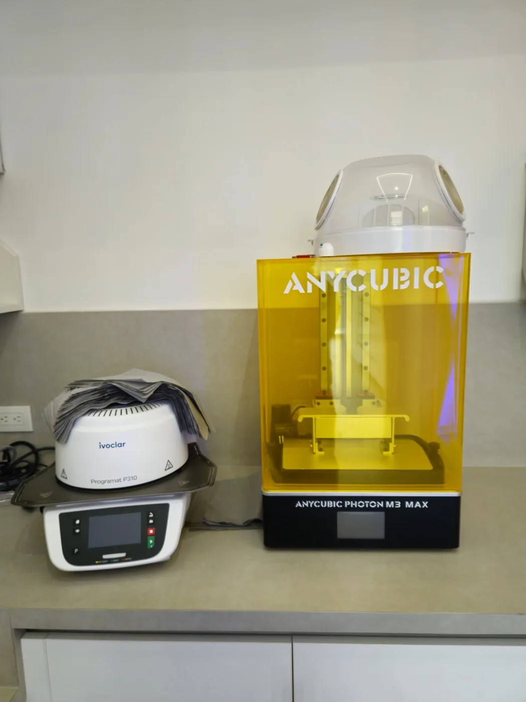

Un plan que parte de la proporción de su rostro, de la salud de sus encías y de cómo muerde, antes de decidir forma y color.

El diseño de sonrisa no es un tratamiento aislado, es la fase de estudio que ordena todo lo demás: antes de intervenir una pieza se define qué forma, qué proporción y qué posición debería tener cada diente en su rostro.
De ahí pueden salir caminos distintos: carillas, ortodoncia previa, tratamiento de las encías o una rehabilitación más amplia. El diseño nombra la planificación, no el material.
Las etapas habituales de la planificación digital. Cuáles se aplican en su caso, y en qué orden, se determina tras la evaluación clínica.
Fotografías del rostro en reposo y sonriendo, más tomas intraorales. Sobre ellas se miden la línea media, el plano incisal y cuánto diente y encía se ven al sonreír.
El escáner levanta un modelo tridimensional de las arcadas sin pastas de impresión, base del diseño y del trabajo del laboratorio.
Sobre el modelo y las fotografías se dibuja la propuesta: proporción de cada pieza, contorno de la encía y curvatura del borde incisal.
El diseño aprobado suele trasladarse a la boca con material provisional. Permite valorar la propuesta en su propia cara y ajustar lo que no convenza, teniendo en cuenta que el material definitivo puede verse distinto.
El escáner intraoral, la impresión 3D y el horno cerámico están en el laboratorio del propio centro, y las tomografías se toman en su centro radiológico 3D.

Una sonrisa no se percibe como una fila de dientes sueltos, sino en relación con la cara. El diseño parte de referencias faciales antes que del tono.
Se compara la línea media dental con la del rostro, el plano de los bordes incisales con la línea de los ojos, y la curva de los dientes superiores respecto al labio inferior.
A eso se suma la función. Los bordes de los incisivos participan al pronunciar la ese y la efe y reparten las fuerzas al morder. Un diseño que ignore la mordida puede verse correcto en una fotografía y fallar con el uso.
Si se contempla aclarar el tono, el blanqueamiento dental se valora antes de fijar el color definitivo: la cerámica no cambia con los agentes blanqueadores.
La parte visible se apoya en tejidos sanos. Esto se revisa, y se trata si hace falta, antes de plantear carillas.

Una carilla es una lámina fina que se adhiere a la cara visible del diente y deja intacta la mayor parte de su estructura. Una corona cubre la pieza en todo su contorno. La diferencia no es de categoría, es de indicación.
La carilla se plantea cuando el diente conserva buena parte de su estructura y se busca corregir forma, color, pequeños desalineamientos o desgastes del borde. La corona entra cuando queda poco tejido sano o la pieza necesita refuerzo. Si faltan piezas, se valoran junto con implantes dentales o rehabilitación oral.
También cambia el material. La porcelana se fabrica en el laboratorio y resiste bien la tinción. La resina compuesta se modela sobre el diente en la consulta y es más sencilla de reparar, aunque por lo general tiende a cambiar de tono con el tiempo.
El estudio fotográfico, el escaneo, el diseño digital y la prueba con material provisional, cuando se coloca sin desgaste, no modifican sus dientes. Puede pedir cambios o detenerse ahí.
Preparar el esmalte para una carilla de porcelana sí modifica el diente de forma permanente: el tejido retirado no vuelve y la pieza queda dependiente de una restauración que la cubra. Por eso conviene aprobar el diseño antes de cualquier desgaste.

Cuántas piezas entran en el diseño, con qué material y en qué orden se decide tras ver su boca, sus radiografías y lo que usted espera del resultado.
El Dr. John Andrew Hazbun Legrand, especialista en Implantes Dentales, Rehabilitación y Estética con más de 24 años de experiencia, dirige estos casos e integra a profesionales de otras disciplinas, como ortodoncia o endodoncia, cuando el plan lo requiere. Puede conocer su trayectoria.
Para valorar su caso, agende su cita de evaluación en Design Center, Zona 10.
El diseño se revisa en pantalla, sobre sus fotografías y su modelo digital, y por lo general puede probarse después en boca con material provisional. Esa prueba es una aproximación a la propuesta, no una réplica del resultado final, que depende del material definitivo y de la evaluación clínica de su caso.
Depende del tipo y del caso. La de porcelana suele requerir preparar una capa de esmalte, y ese tejido no se recupera. La de resina compuesta requiere menos preparación.
No existe una duración que aplique por igual a todos los pacientes. Influyen la higiene, el estado de las encías, su mordida y si aprieta los dientes.
En algunos casos conviene: si las piezas están rotadas o desplazadas, moverlas primero permite un diseño con menos desgaste. Se decide con el estudio en la mano.
Depende de cuántas piezas se vean al sonreír y de la simetría que busque el diseño. No hay un número fijo: se define sobre el estudio fotográfico y el modelo digital.
La preparación suele realizarse con anestesia local. Para quienes sienten ansiedad ante el dentista, el centro cuenta con sedación consciente con óxido nitroso, indicada caso por caso según el historial médico.
Depende de cuántas piezas entren en el plan y del material que se indique para cada una. Como el alcance se define sobre el estudio previo, el costo se le explica en la consulta de valoración.
Escríbanos por WhatsApp y con gusto le orientamos sobre el tratamiento ideal para usted.
Lunes a viernes de 9:00 a.m. a 6:00 p.m. Sábados con cita previa. Design Center, Torre 1, Nivel 9, Oficina 909, Zona 10.